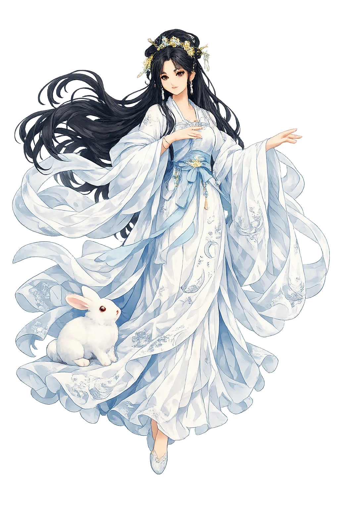
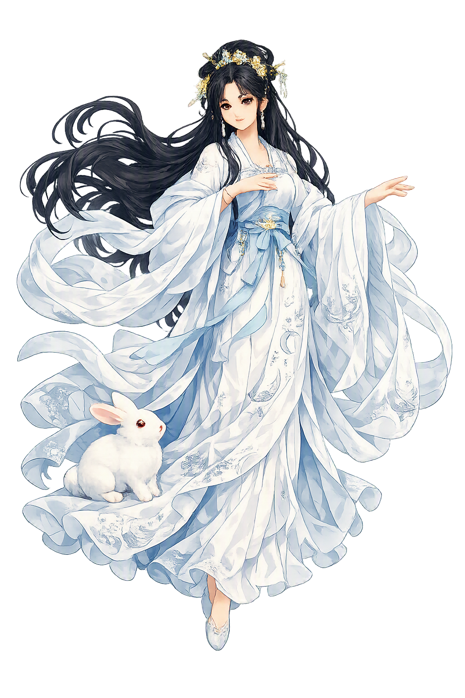

The Authentic Orthography
Moon, Immortality, Mid-Autumn · The Moon goddess who drank the elixir of immortality

Unicode restoration and ASCII comparison
嫦娥
The name in its original Chinese form. Chángé (嫦娥) is attested in the source tradition — “The Moon goddess who drank the elixir of immortality”. Its acute stress marks carry the full phonetic and orthographic weight of the source tradition.
change
Reduced to plain change, the name loses everything that made it specific: acute stress marks. What remains is an ASCII string that machines can parse but that no longer speaks with its original voice.
Chángé
The Unicode restoration recovers what ASCII flattened. Chángé restores acute stress marks, returning the name to its original written dignity. The domain encodes to Punycode, but the browser displays the truth.
Chángé.com → xn--chng-6na4c.com
The non-ASCII characters in Chángé are encoded while the ASCII remains visible. To the DNS, it is Punycode. To humanity, it is Chángé.
How Chángé is preserved in writing
A bespoke provenance study for Chángé is being prepared by the PUNICODEX scholarly team.
Contribute scholarly provenance →Owned, ideal, and ASCII forms of Chángé
Chángé
Restores 嫦娥. The live temple domain — chángé.com.
change
Flattens 嫦娥. The plain ASCII fallback — what DNS and legacy systems see.
How Chángé was spoken
Immortality, Exile, Reunion
Chángé is the woman who swallowed forever and paid for it with the earth. Wife of the archer Hòuyì, who shot nine suns out of the sky, she came into possession of the elixir of immortality — a gift of the Queen Mother of the West, Xīwángmǔ — and drank it. Whether she acted to keep the drug from a treacherous disciple or out of her own longing, the sources divide; what they agree on is the result: her body grew light, the ground let go of her, and she rose through the night until the moon received her. There she remains, the goddess of the cold luminary, in the Guǎnghán Palace — the Palace of Vast Cold.
She is not alone up there. The Jade Rabbit stands beside her, pounding the elixir with mortar and pestle, and the woodcutter Wú Gāng swings his axe at a cassia tree that heals each wound as it is struck. Once a year, at the full moon of the eighth month, all of China looks up at her: the Mid-Autumn Festival, when families reunite, mooncakes are cut, and the distance between heaven and earth is measured in shared light.
Her dwelling and her domain; the full moon of Mid-Autumn is read as her face, brightest and roundest when mortal eyes seek reunion.
Her husband, who shot down nine of the ten suns and received the elixir of immortality from Xīwángmǔ — the gift that divided them forever.
The Guǎnghán Palace (廣寒宮), her luminous and solitary court on the moon, shared with the Jade Rabbit and the woodcutter Wú Gāng.
The Mid-Autumn Festival (中秋節): mooncakes, moon-gazing, and the gathering of families — the night her separation sanctifies mortal togetherness.
Stories of Chángé
Chángé's story is short and inexhaustible: one ascent, endlessly retold. The early sources preserve a bare skeleton — an elixir, a flight, a moon — and two thousand years of poets, painters, and festival-goers have hung their longing on it.
The core myth, fixed in the Huáinánzǐ (c. 2nd century BCE), begins with the archer Hòuyì, who had shot down nine of the ten suns and so received from Xīwángmǔ, Queen Mother of the West, the elixir of immortality. Chángé took it and floated up to the moon, where she became its goddess. The sources divide on her motive: in some versions she drinks to keep the elixir from Féngméng, Hòuyì's treacherous disciple; in others she drinks out of her own longing for deathlessness. Scholarship preserves both strands rather than adjudicating between them — the myth holds theft and sacrifice in suspension.
The goddess was originally 姮娥 Héng'é. Under the Han, her name was altered to avoid the naming taboo on the personal name of Emperor Wen, Liú Héng 劉恆: the graph 姮 was replaced by the synonymous 常, and Héng'é became Chángé. It is a rare case where imperial censorship is legible inside a divine name itself — a goddess renamed so that a mortal emperor's name could remain unspoken.
Her court on the moon is small and eternal. The Jade Rabbit (玉兔) stands at her side, pounding the elixir of immortality with mortar and pestle — the same work, night without end. Beside the palace grows a cassia tree that heals every wound the moment it is struck; the woodcutter Wú Gāng was condemned to fell it, and so he chops forever at a trunk that will not fall. Companionship, labor, and futility share one silver landscape.
At the full moon of the eighth lunar month, China keeps the Mid-Autumn Festival (中秋節). Families gather, mooncakes are cut into wedges like the phases returning to round, and eyes turn upward to the brightest moon of the year — to her. The festival reads her exile backward: the goddess who can never come home becomes the patroness of everyone who can.
Chángé teaches that every ascent is also a departure. She took the one thing everyone is told to want — endless life — and found that it cost the one thing that makes life bearable: the person she left below. The myth refuses to resolve her motive, and that refusal is its honesty; we have all swallowed things half in longing and half in self-defense, and only later learned which. Her moon is the most beautiful object in the Chinese night precisely because it is the far side of reunion — the light by which the separated recognize one another.
Enter Extended Lore